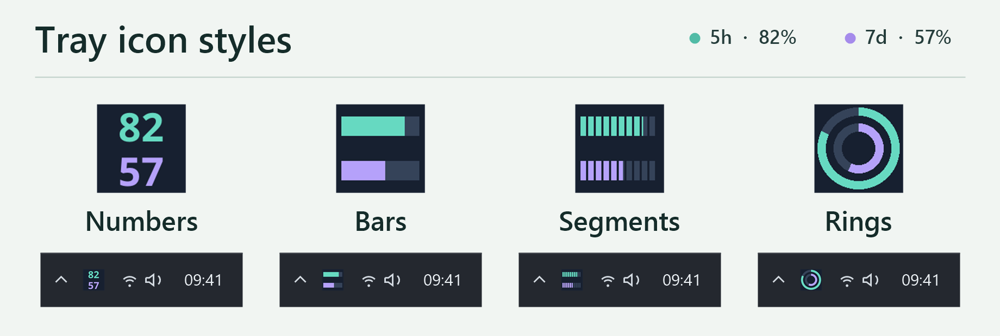
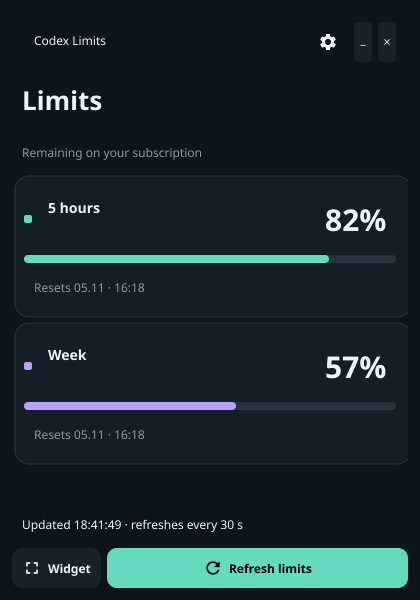

Windows · Gratis y de código abierto
Límites de Codex en la bandeja de Windows
Consulta cuánto te queda de los límites de cinco horas y semanal de Codex y cuándo se restablecen. Deja el icono junto al reloj o abre un pequeño widget siempre visible.
Instalador para Windows x64 · Requiere Codex instalado y una sesión iniciada


Instalación
Cómo mostrar los límites de Codex en la bandeja
- Inicia sesión en Codex. Usa Codex Desktop o ejecuta
codex login. La aplicación no necesita otra cuenta ni una clave de API. - Ejecuta el instalador de Windows. Se instala para tu usuario sin permisos de administrador. El instalador no está firmado, por lo que SmartScreen puede mostrar un aviso. Descárgalo solo desde GitHub Releases de este proyecto.
- Abre Codex Limit Tray. Cierra la ventana para dejar la aplicación en la bandeja. Haz clic en el icono para ver el saldo y la hora de restablecimiento.
